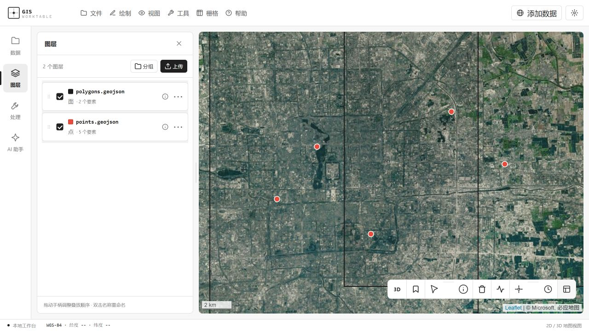
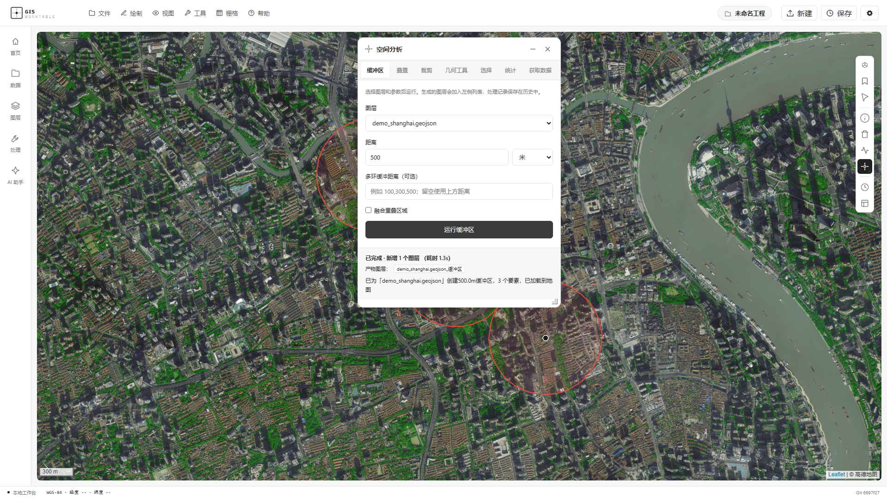

01 / DATA
公开数据与服务接入
先把数据放进来
导入矢量和栅格文件，也能接入公开数据服务。在图层面板中整理数据，查看属性和坐标系。
查看支持的功能
一份文件、一条数据服务地址，或一个现有工程。
从手边的数据出发，分析、检查，再继续下一步。
导入矢量和栅格文件，也能接入公开数据服务。在图层面板中整理数据，查看属性和坐标系。
查看支持的功能
缓冲、叠置、地形分析，从工具菜单开始。也可以告诉 AI 你要做什么，让它结合当前图层调用工具。
AI 助手需要配置模型服务把图层、样式和处理历史留在工程里。需要交付时，导出数据、地图或报告，继续用于其他 GIS 软件。
工程保存与恢复 / 数据导出启动工作台，导入仓库提供的 .giswork 示例，查看示例面图层。
在工具中设置距离参数，生成结果后，回到地图上检查范围。
查看图层与处理记录。保存后，下次打开还能接着处理。
从数据出发，
下次打开，接着分析。
目前主要在本地运行，启动后通过浏览器打开工作台。Windows 可使用仓库中的 start.bat。桌面客户端仍是实验性功能。
可以。图层管理和手动 GIS 工具可以独立使用，本地分析无需模型 API Key。AI 助手则需要配置兼容 OpenAI 接口的模型服务。
支持常见矢量、栅格文件，以及 OGC、ArcGIS 等数据服务。不同格式和工具有各自的输入要求，具体请查看仓库中的功能说明。
安装好依赖后，可以对本地数据进行部分手动分析。在线底图、公开数据服务和远程模型仍需要网络。
本地后端处理导入的数据。使用在线数据服务或 AI 助手时，相关请求会发送到对应服务；使用前请查看模型配置和工具说明，确认数据适合发送。
项目仍在开发中，目前更适合 GIS 学习、分析原型和工作流演示。分析结果需要结合数据质量、坐标系和方法适用性核验，不能代替专业判断。
从 GitHub 获取源码和启动说明。
Windows 用户可以从 start.bat 开始。